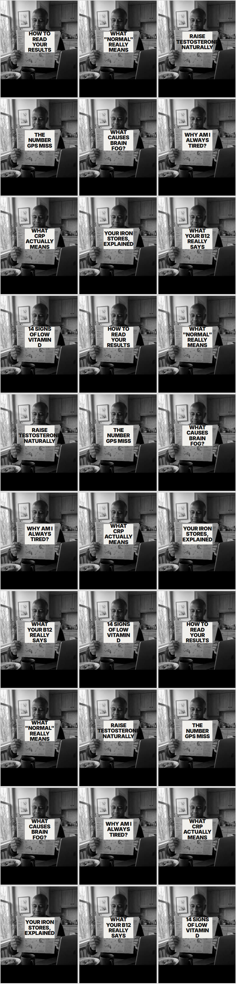
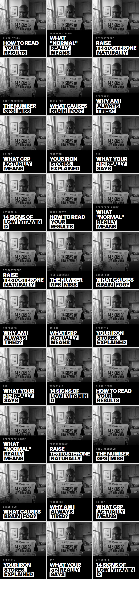
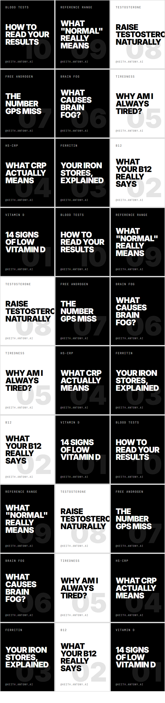
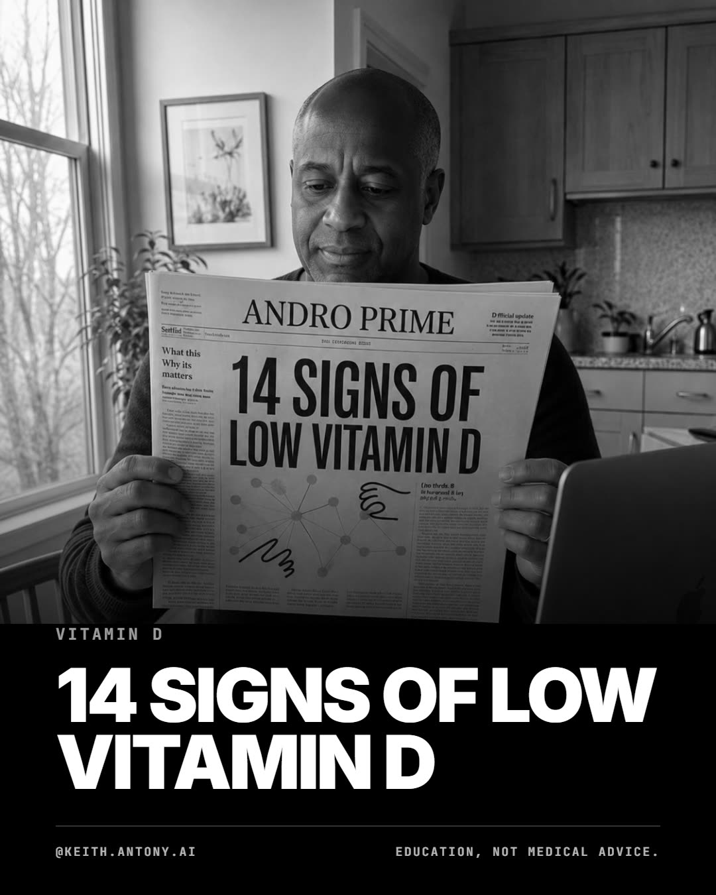
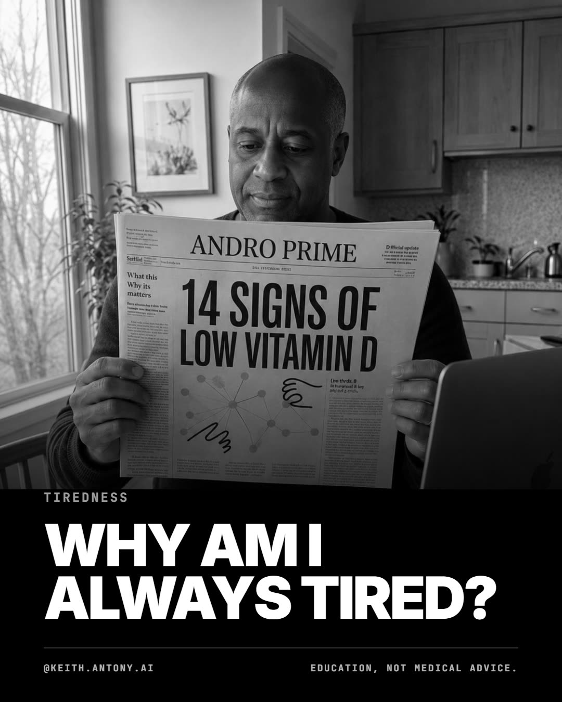
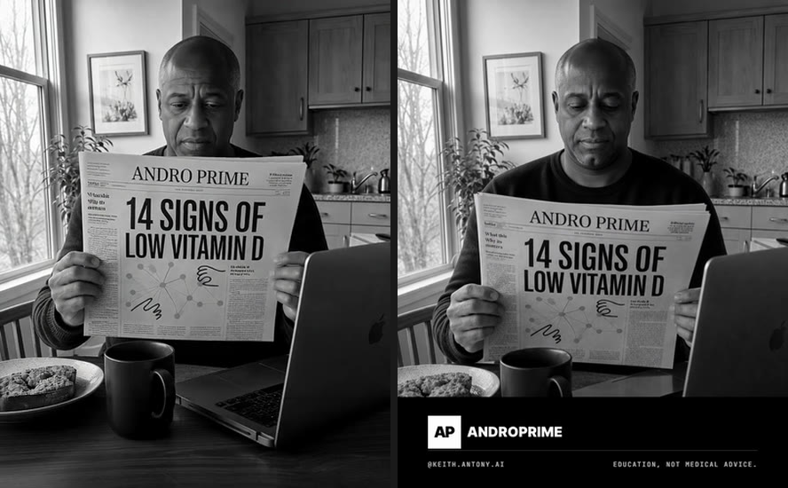
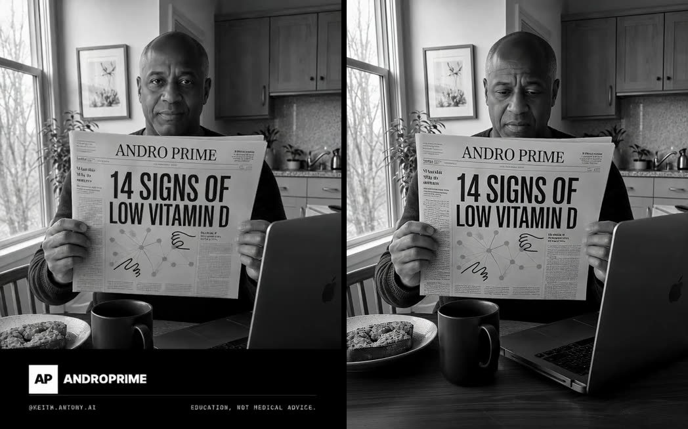

Source: content/blog/14-signs-of-vitamin-d-deficiency.mdx (published, Ewa-reviewed)
Format: 1080 × 1350 (Instagram 4:5) · 8 slides · target account keith.antony.ai
Cover: base photo edited per article · Slides 2–8: deterministic HTML template, brand tokens
Updated 2026-08-10 · base photo replaced · three animated covers shortlisted · band composited, never model-rendered
Open decision · raised by Keith 2026-08-11 · not decided
The grid, not the feed, is where this breaks
Every design call so far has been judged on a single carousel. Instagram's profile grid shows
slide 1 only, so a first-time visitor sees thirty covers at once. That is the surface deciding
whether they follow, and it is the one nobody had looked at.
The run posts ten topics three times each (slides 1–7 shared, only the close
changes), and all ten covers sit on the same base photograph. So the grid is one image, thirty
times. The schedule spaces a topic's three appearances ten tiles apart, so no two neighbours
match; it makes no difference, because the thing you notice is the photo.

A · current direction B · headline in the newsprint

D · direction A · headline as an overlay

C · typographic covers, photo moves to slide 2
A and D are the same photograph and the same ten headlines. The only difference is
where the type sits and how big it is.
What five reference accounts all do
Keith supplied five Instagram grids (an AI-tools creator, a health creator, Rethink Testosterone,
Chris Williamson, GenAI.works). They share exactly one feature:
the headline is a graphic overlay on top of the image, large and high contrast. Not one of
them bakes it into the scene.
The AI-tools account settles it. It runs the same headshot in all thirty tiles,
same crop, same expression, and it does not read as a bot, because the logos and a red headline bar
carry every bit of the variation. The repeated photograph was never the problem.
Ours is small, angled, low contrast and printed on newsprint in the middle distance: the only
element that varies is the one element you cannot read.
Direction A at full size
Same base photo, headline moved onto a plate at the foot of the frame. This is the
direction A already described further down this page and abandoned in favour of printing
into the scene.

direction A · vitamin D

direction A · tirednessdirection B · live cover, for comparison
Visible defect in both mocks, and it is the one thing to fix:
the newsprint still reads “14 signs of low vitamin D” underneath, because base-2 has a
headline baked in. Direction A needs one base generated with blank newsprint. After
that single generation every cover is a Chrome render.
What adopting direction A would remove
The mask, the per-swap Replicate call, and the rule that the mask is only valid for one cover
geometry. Covers become deterministic renders like every other slide, so
the likeness decision stops blocking production: change the photograph whenever you
like and nothing downstream breaks. The 30-day experiment is untouched either way, because slide 1
still varies only with topic.
Cost: the inpainting work becomes unused for stills. The masked route stays the right answer for
anything that must edit inside a photograph, and the finding that Higgsfield cannot mask at all
still stands.
Recommendation: direction A. It keeps the photograph and the face in the feed,
fixes the grid, and removes a subsystem. Not decided; Keith's call.
Cover direction B · headline printed in the scene
Approach: one fixed base photo, edited per article.
Rather than generating a new scene each week, the masthead and headline block on a single
approved photo are masked out and re-rendered with the new article's headline. Same man,
same kitchen, same breakfast every week, which is what the reference account does and what
prompt-only generation could never give us.
Base photo replaced 2026-08-10.
Everything in the superseded strip at the foot of this section was built on an earlier base
photo, in colour, with a different subject. The live bases are the six below: 1122 × 1402,
already black and white, already carrying the brand band.
base-1base-2 · SELECTEDbase-3base-4base-5base-6
The selected cover, and the eye fix
At feed size the subject read as though his eyes were shut. At full resolution none of the six
are actually shut: all are downcast, with heavy lids and a furrowed brow, which is what compresses
into a closed look in a thumbnail. Two independent editors were asked, in two separate wordings each,
to lift the lids while keeping the gaze down on the page. All four attempts raised the gaze to camera.
The models treat eyelid aperture and gaze direction as coupled and drop the gaze constraint, so the
raised gaze is a capability limit rather than a prompt failure, and was accepted as a deliberate change.
CURRENT COVER · base-2, eyes opened, band recompositedBefore / after · same crop box, native resolution
Produced with Seedream 5 Pro via Higgsfield, then corrected back to true geometry. Higgsfield returns
the requested aspect ratio exactly and stretches to reach it, so the raw 2048 × 2048 render is about
1.6% too wide. The version above is rescaled to the source geometry. The brand band was cropped off
before the edit and composited back afterwards, so the lockup never passed through a model.
Where the mask stands
Solved 2026-08-10.
The cover above has "14 signs of low vitamin D" printed into the photograph, so a run of 30 posts
needs 30 headline swaps. The mask has now been cut against this layout, at
x 350-785, y 452-750 on the 1122 × 1140 image area, and one swap is proven end to end:
the same photograph carries "Why am I always tired?" with every region outside the box
measuring 1.000 SSIM against the source, above, below, left and right. That is the property
the whole run rests on. About £0.07 a swap, via node inpaint.js --l1 "..." --l2 "...".
The mask is valid only for this cover geometry: change the base photo and it must be re-cut.
Route matters here. Masked inpainting on Replicate (Ideogram v3, about £0.07 a call) keeps every pixel
outside the box identical, which is what holds the character steady across a grid. Higgsfield cannot do
this at all: no model in its catalogue accepts a mask input, so every edit re-renders the whole frame.
Reconstructing the mask afterwards was tried and fails, because the editor re-frames the newspaper and
the new headline runs outside the old box and gets sliced mid-word.
Second, smaller issue: the band is baked at a different height in every base, from 195px on base-5 to
263px on base-1. Across a 30 post grid that will read as sloppy. The band should be composited at a
fixed height from the template rather than inherited from whatever the image generator produced.
Superseded: the original base photo and its mask
Old · inpainted + grayscaleOld source photo (colour)Old masked region · geometry no longer appliesOld · after inpaint, before grayscale
Earlier: centred, no breakfast, no laptop
High-key but centredAlt 1Alt 2
Earlier: darker kitchen, no masthead
Kitchen · moody · supersededKitchen · alt 1Kitchen · alt 2
Rejected: the tube version
Concept read well but the newspaper came out the size of a door and stopped looking real. Kept for the record, and because the text failures below are the useful part.
Tube · Ideogram · oversized propIdeogram · 1st try · dropped "LOW"Flux · 1st try · doubled "LOW"Flux · retry · split across the foldRecraft · gibberish type
Animated cover (slide 1 as video) — the three shortlisted
Selected 2026-08-10. All three are image-to-video from an approved still, fitted to 1080×1350 at 24fps
with the brand band composited back on afterwards. The band is never sent through a video model:
it is cropped off before animating and laid back over every frame, so the lockup stays pin sharp.
Instagram carousels accept a video in slot 1 alongside image slides.
01 · Replicate · Kling v2.1 · looks up · headline stays put · 5.0s
03 · Higgsfield · Kling 3.0 · dark sweater · looks up · 5.0s
Replicate Kling v2.1
has negative_prompt · protects the type
Higgsfield Kling 3.0
no negative_prompt · low motion only
All three
1080×1350 · 24fps · 121 frames · band composited
Why these three and not new generations. Higgsfield does not hold the character
well enough to re-render the cover per article: it has no masked inpainting at all, so every edit
re-renders the whole frame and the man drifts. Measured against the untouched regions of the source
photo, the masked Replicate route scores 0.965 to 0.984 SSIM while the best Higgsfield editor
manages 0.933 to 0.965. Small per post, but it compounds across a 30 post grid, which is the one
thing the fixed base photo exists to prevent. These three are therefore kept as rendered rather
than regenerated.
Superseded animations
Sip · headline moves
Window scene · superseded
Video model test · cheapest model, 2026-08-11
Ten clips are owed if the video cover is adopted, so the question was whether the cheapest model
is good enough. One generation: node video.js wan lookup cover-current-b2.jpg,
22.9s predict time. Compared against shortlist 01, which is the same
lookup scene on Kling v2.1.
wan-2.2-i2v-fast
Kling v2.1 (shortlist 01)
Resolution
560 × 704
1080 × 1350
Frame rate
16 fps, 81 frames
24 fps, 121 frames
Duration
5.06s
5.04s
negative_prompt
not supported
supported
Headline survived
yes
yes
Frame held position
no, drifts
yes
Band
eaten (sent through the model)
composited after, never sent
The encouraging result: the headline survived on a model with
no negative prompt at all, which is the failure everyone expected. The type
protection in PAPER_STILL is stated positively in the prompt and that was enough. It
means the expensive model may not be necessary; it does not mean this one is usable.
Two failures. Last frame of each below. The wan frame
drifts: it zooms and shifts despite “locked-off camera, no camera
movement”. SSIM between the clip's own first and last frame across the headline region is
0.37, which is translation and scale rather than warping. Kling holds position.

last frame · wan raw model output (left) vs kling shortlist 01 (right)
The band difference is NOT a model difference, and reading it as one would be the wrong
lesson. The wan clip is raw model output with the band sent through the model, which
painted over it with table, mug and laptop. The Kling clip is a finished shortlist asset whose band
was composited back afterwards. Kling would have eaten it too. What the pair actually
shows is that the post-hoc composite is doing real work, and that the step is missing from the
script.

wan · first frame (left) vs last frame (right)
Defect found by this test · not fixed
The band should never reach a video model. video.js says it does not:
“The band is cropped off before animating and re-composited afterwards: a burnt-in band
would be warped by the video model along with everything else, and the lockup has to stay pin
sharp.”
The code does not do this. The word crop appears once in the file,
inside that comment. So anyone following the file's own documentation spends money and gets a
clip with a destroyed lockup, while the comment reads as reassurance that it is handled. It
would have cost all ten clips, not one.
Read: the cheapest model is out on resolution alone, before the drift is even
considered. But the type held, so the expensive model may not be needed either.
seedance-1-lite sits between them and is worth one call — after
the band crop is real, not before.
Cover bake-off — same prompt, three models
Identical prompt, identical type layer. The photo is generated with no text in it; the headline is set by the template, so the model never renders a letterform.
Slot 1 is shown here as a still so the swipe order reads in one line. It ships as one of the three
animated covers above. Slides 2 to 8 are rendered deterministically from brand tokens, so no model
ever draws a letterform in them.
01 · cover · current base, ships as video02 · the setup03 · signs 01–0404 · signs 05–0905 · signs 10–1306 · the frame-flip07 · why it matters08 · CTA
At feed size
This is roughly how big the cover actually is in a phone feed. The only slide that has to win attention is the first one; everything after it is being read, not scanned.
cover, feed scale
list, feed scale
frame-flip, feed scale
What still needs doing
1. Re-author the mask and prove one headline swap.Done 2026-08-10. Box is x 350-785, y 452-750; outside it the output
is pixel-identical to the source, measured at 1.000 SSIM on all four sides. 2. Fix the band to a single height, composited from the template rather than baked
into each generated base. 3. Verify Metricool can schedule an Instagram carousel.Answered 2026-08-10: it can, with either a still or a video in frame 1.
Two 8-slide drafts on the Keith Antony AI brand, ids 360411107 and 360411483, read back
intact. media takes public URLs, instagramData.type = "POST", and a carousel
is just more than one media entry. Proves the scheduling path only: both are drafts with
autoPublish: false that never reached Instagram. 4. Compliance. None of this copy has been through /compliance-preflight.
Thirty posts is thirty compressions of a signed-off pillar down to fragments, and the pre-flight has
no fragment mode yet. 5. Source material is the binding constraint, not production. Of 18 published articles
only about 12 map to a live kit marker, so 30 daily posts means re-cutting roughly 12 topics two or
three ways.
Resolved since the last version of this page: REPLICATE_API_TOKEN is in the repo root
.env (added 2026-08-09), so the cover is no longer a placeholder.